Mega Drive - Os jogos da Capcom
 :::. Por B-Mark
:::. Por B-Mark
No passado a relação entre Sega e Capcom consistia
somente da Sega pedir autorização para
reprogramação de jogos para seus consoles, já que
a Capcom e outras softhouses eram impedidas de produzir jogos para
sistemas concorrentes devido a uma cláusula contratual da
Nintendo. Ghouls and Ghosts, Strider, Mercs, Chiki Chiki Boys e
Forgotten Worlds foram estes jogos que a Sega converteu para o Mega
Drive com a autorização da Capcom. Além disso eles
também converteram estes mesmos jogos, com exceção
do Chiki Chiki Boys para o Master System e também produziram
Final Fight CD para Sega CD.
Em 1993, após anos produzindo jogos só para Arcades e sistemas da Nintendo a Capcom fechou um contrato com a Sega para produzir jogos para os seus consoles. A entrada da Capcom no hall de empresas que produzem jogos para o Mega Drive foi marcada com a conversão do Street Fighter II para o console além da criação do joystick de 6 botões para jogar o Street e outros jogos de luta. A quantidade de jogos que a Capcom produziu para o Mega Drive foi bem menor que no Super NES, mas o suporte da Capcom aos consoles da Sega aumentou no Saturn e no Dreamcast.
Wii Virtual Console
No momento a própria Capcom ainda não lançou seus jogos de Mega Drive
para o Virtual Console, mas a Sega já lançou o Ghouls and Ghosts e há
planos para lançar o MERCS que foram portados por ela. Para mim isso foi
uma grande surpresa, mas estes 2 jogos não tiveram versões para Super
NES. Certamente a Sega deve ter conseguido a autorização da Capcom para
os lançamentos dos jogos.
| 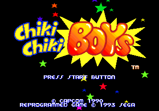 | 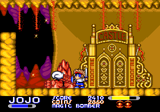 |
Fabricante: Sega
Ano: 1993
Conversão do jogo de Arcade também conhecido como Mega
Twins. O jogo conta a história de 2 irmãos que lutam
contra inimigos que dominaram o reino onde vivem. O mais velho ( Azul )
é um habilidoso espadachim, enquanto que o mais novo ( Vermelho
) é perito com as magias. O jogo é bom e lembra um anime,
mas infelizmente o jogo não tem multiplayer como no Arcade.
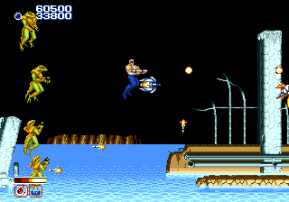
Fabricante: Sega
Ano: 1989
Conversão do jogo de Arcade da Capcom feita pela Sega. O jogo
conta a história de dois guerreiros de nomes desconhecidos que
lutam num futuro, em que a Terra está em ruínas, contra
um exército de alienígenas para libertar o planeta. O
personagem do jogador 1 também apareceu em Marvel VS Capcom para
Arcades, Dreamcast e PSX com o nome Unknown Soldier.
Ghouls and Ghosts ( Dai Makaimura )
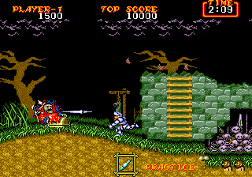
Fabricante: Sega
Ano: 1989
Ghouls and Ghosts é a sequência de Ghosts and Goblins onde Arthur, após
ter vencido Satan no jogo anterior, encontra seu reino transformado em um
mundo de trevas por Lúcifer (Loki nas versões para Mega Drive e Master
System) onde ele roubou todas as almas dos habitantes de seu reino
inclusive a de sua noiva, a Princesa Prin Prin.
Em relação ao jogo anterior temos várias novidades como uma grande
variedade de armas, armadura de ouro, em que é possível usar magias que
dependem da arma usada, e um mago inimigo que pode te transformar em um
pato no caso de estar usando armadura ou num velho se estiver só de
cuecas.
No Japão o jogo é conhecido como Dai Makaimura que signifca "Grande
vilarejo do Mundo dos Demônios".
O jogo é bom, mas é mais fácil que o original dos Arcades; as cut-scenes
foram suprimidas e os chefes tiveram seus nomes mudados.
Além disso o jogo foi reprogramado por Yuji Naka, que mais tarde se
tornaria conhecido como o criador do Sonic.
Ghouls and Ghosts para Mega Drive também está disponível para o Virtual
Console do Wii pelo preço de 800 Wii Ponits nos EUA, na Europa, na
Austrália e na Nova Zelândia e 600 Wii Points no Japão.
Megaman: The Wily Wars (Rockman Megaworld)
| 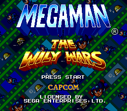 | 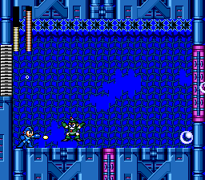 |
Fabricante: Capcom
Ano: 1994
Lançado na Europa e no Japão em cartuchos e disponível nos EUA para
download no Sega Channel. No Japão ele é conhecido como Rockman Megaworld. Esta coletânea traz os 3
primeiros jogos do Megaman que saíram originalmente no NES para o 16
bits da Sega com gráficos e sons melhorados, e conta ainda com um modo
extra chamada Wily Tower. O Megaman é bem conhecido, mas esta coletânea para o Mega Drive nem
tanto.
MERCS (Senjo no Okami Tsu)
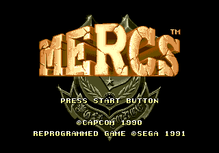
Fabricante: Sega
Ano: 1991
Jogo de tiro estilo Commando da própria Capcom e Ikari Warriors
da SNK. MERCS tem como protagonista um mercenário membro de um
grupo anti-terrorista conhecido como Wolf Force, e tem como
missão resgatar o ex-presdiente de Zutulu, na África, que
foi sequestrado por guerrilheiros que o depuseram.
O jogo infelizmente não tem multiplayer como no Arcade mas em
compensação tem o Original Mode, que tem uma história totalmente
diferente do Arcade em que os mercenários recebem ordens para destruir
mísseis nucleares criados por um país chamado Quira e neste modo também é
possível escolher entre 5 personagens diferentes.
MERCS é conhecido no Japão como Senjo no Okami Tsu que significa "Lobo
no Campo de Batalha 2". Segundo informações no Wikipedia há planos para lançar este jogo no
Virtual Console do Wii.
Saturday Night Slam Masters
| 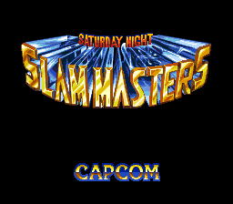 | 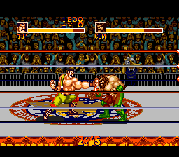 |
Fabricante: Capcom
Ano: 1994
Jogo de luta livre com vários lutadores entre eles Haggar do
Final Fight, cujos comandos para executar os golpes são
iguais ao do SF. Saiu originalmente para os Arcades
e também conta com uma versão para o Super NES.
A versão para Mega Drive não possui o modo de luta de 4 jogadores
presente no Arcade e no Super NES, mas conta com o exclusivo Death Match
que é um VS mode em um ringue com perigos como no World Heroes.
O character design deste jogo foi feito pelo desenhista Tetsuo Hara, que
desenhou os personagens do mangá Hokuto no Ken que foi escrito por
Buronson.
Street Fighter II Special Champion Edition (Street Fighter II Plus Champion Edition)
| 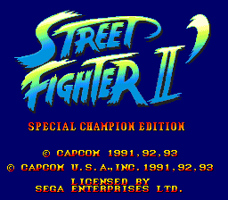 | 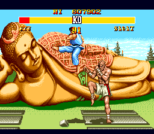 |
Fabricante: Capcom
Ano: 1993
O primeiro jogo da Capcom para o Mega Drive que marcou a estréia
da empresa nos consoles da Sega e a criação do Joystick
de 6 botões. SF 2 Special Champion Edition é inferior nos
gráficos e sons se comparado ao SF2 Turbo Hyper Fighting do
Super NES, mas em matéria de diversão ele não tem
nada a dever, especialmente com o joystick de 6 botões.
Assim como a versão do Super NES, é possível escolher entre o Champion
Edition (Champion) e o Turbo Hyper Fighting (Hyper) dos Arcades.
O jogo também conta com o acesso direto às 10 estrelas no Hyper, a
opção de desligar golpes do VS Mode e o Group Battle, onde são formados
times de lutadores. No Japão ele é conhecido como Street Fighter II Plus Champion Edition.
Strider (Strider Hiryuu)
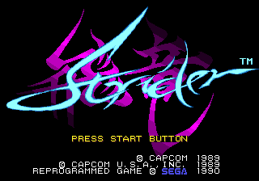
Fabricante: Sega
Ano: 1990
Strider surgiu como um mangá de autoria de Tatsumi Wada e depois
licenciado para jogo de Arcade. O jogo dos Arcades é pouco conhecido por aqui, mas sua versão para Mega
Drive é bem famosa.
A versão para Mega Drive foi portada pela Sega e ele foi o
primeiro jogo do console a ter 8 megabits de memória. Ele
é uma das versões mais populares porque é a
versão mais próxima do Arcade, apesar da falta das vozes
digitalizadas. No Japão, Strider é conhecido como Strider
Hiryuu.
Strider II (Journey from Darkness: Strider Retruns)
| 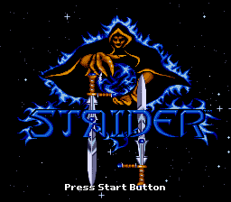 | 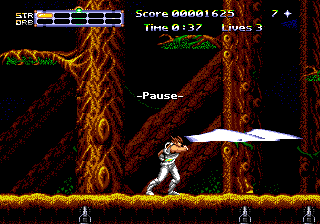 |
Fabricante: U.S Gold
Ano: 1993
Esta sequência de Strider não foi criada pela Capcom
porque foi toda produzida pela U.S Gold com a autorização
da empresa. Conhecido como Strider II na Europa e Journey from
Darkness: Strider Returns nos EUA, o jogo foi duramente criticado pela
imprensa devido ao fato da sua jogabilidade ser inferior ao do primeiro
jogo.
Ele também tem a controvérsia sobre o protagonista ser o Hiryuu do
primeiro jogo e um personagem original chamado Hinjo que são alternados
no manual do jogo. O verdadeiro Strider 2 foi lançado pela Capcom em 1998 para Arcades e em
2000 para PSX, após o sucesso de Strider Hiryuu em Marvel vs Capcom.
Super Street Fighter II: The New Challengers
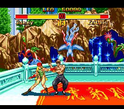
Fabricante: Capcom
Ano: 1994
Conversão do Upgrade de SF2 que conta com as presenças de novos
lutadores: Cammy, Fei Long, Dee Jay e T. Hawk.
Assim como o SF2 Special Champion Edition, seus gráficos e sons são
inferiores às versões para Arcades e Super NES, mas mesmo assim é um bom
jogo e conta com os modos Tournamente e Group Battle.
The Great Circus Mystery Starring Mickey & Minnie (Mickey Mouse: Minnie´s Magical Adventure 2)
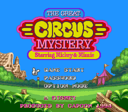
Fabricante: Capcom
Ano: 1994
O único jogo do Mickey produzido pela Capcom e que também tem versões
para SNES e GBA, já que os demais jogos estrelados pelo camundongo como
Castle of Illusion e Fantasia eram da própria Sega.
O jogo é também a sequência de Magical Quest Starring Mickey Mouse, que
saiu para o SNES em 1992, também tem alguns elementos deste jogo como
as fantasias usadas pelos personagens que dão habilidades diferentes a
eles.
Mickey e Minnie estão investigando um circo que foi atacado pelo Baron
Pete (João Bafo de Onça no Brasil) e o jogo permite modo cooperativo
de 2 jogadores.
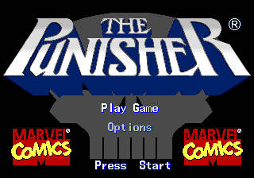
Fabricante: Capcom
Ano: 1994
Conversão do Beat em Up dos Arcades com heróis da Marvel onde vc
controla o Punisher (Justiceiro) ou o Nick Fury na luta conta o
Kingpin e sua gangue. O jogo lembra Captain Commando e Caddilacs and Dinossuars, que são beat
em up's nos moldes do Final Fight, mas com uma grande quantidade e tipos
de armas de fogo e brancas.
Os gráficos são inferiores aos dos Arcades e alguns
inimigos do original não aparecem devido à falta de
memória. Outra diferença que o jogo do Mega tem é
que você pode escolher entre o Punisher ou o Nick Fury, ao
contrário do Arcade onde o jogador 1 usa o Punisher e o jogador
2 usa o Nick Fury.
Acesse o Trombone e comente sobre essa matéria!